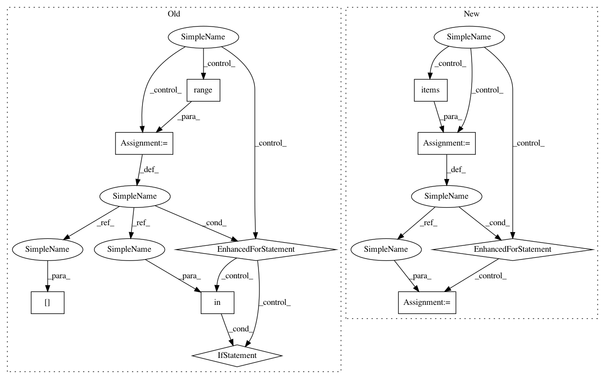

625319846c77b37a9f2a5ffcf8d3be311cd534fe,homeassistant/components/homematic.py,,_get_devices,#Any#Any#,307
Before Change
metadata.update(device.BINARYNODE)
params = _create_params_list(device, metadata, device_type)
if params:
// Generate options for 1...n elements with 1...n params
for channel in range(1, device.ELEMENT + 1):
_LOGGER.debug("Handling %s:%i", key, channel)
if channel in params:
for param in params[channel]:
name = _create_ha_name(
name=device.NAME,
channel=channel,
param=param
)
device_dict = {
CONF_PLATFORM: "homematic",
ATTR_ADDRESS: key,
ATTR_NAME: name,
ATTR_CHANNEL: channel
}
if param is not None:
device_dict.update({ATTR_PARAM: param})
// Add new device
try:
DEVICE_SCHEMA(device_dict)
device_arr.append(device_dict)
except vol.MultipleInvalid as err:
_LOGGER.error("Invalid device config: %s",
str(err))
else:
_LOGGER.debug("Channel %i not in params", channel)
else:
_LOGGER.debug("Got no params for %s", key)
_LOGGER.debug("%s autodiscovery: %s", device_type, str(device_arr))
return device_arr
After Change
else:
metadata.update({None: device.ELEMENT})
if metadata:
// Generate options for 1...n elements with 1...n params
for param, channels in metadata.items():
if param in HM_IGNORE_DISCOVERY_NODE:
continue
// add devices
_LOGGER.debug("Handling %s: %s", param, channels)
for channel in channels:
name = _create_ha_name(
name=device.NAME,
channel=channel,
param=param
)
device_dict = {
CONF_PLATFORM: "homematic",
ATTR_ADDRESS: key,
ATTR_NAME: name,
ATTR_CHANNEL: channel
}
if param is not None:
device_dict[ATTR_PARAM] = param
// Add new device
try:
DEVICE_SCHEMA(device_dict)
device_arr.append(device_dict)
except vol.MultipleInvalid as err:
_LOGGER.error("Invalid device config: %s",
str(err))
else:
_LOGGER.debug("Got no params for %s", key)
_LOGGER.debug("%s autodiscovery: %s", device_type, str(device_arr))
return device_arr
In pattern: SUPERPATTERN
Frequency: 3
Non-data size: 10
Instances
Project Name: home-assistant/home-assistant
Commit Name: 625319846c77b37a9f2a5ffcf8d3be311cd534fe
Time: 2016-10-03
Author: pascal.vizeli@syshack.ch
File Name: homeassistant/components/homematic.py
Class Name:
Method Name: _get_devices
Project Name: scikit-multiflow/scikit-multiflow
Commit Name: 7301f860743d7b45cd1d885094bf753629b535e8
Time: 2018-06-14
Author: jacob.montiel@gmail.com
File Name: src/skmultiflow/classification/trees/hoeffding_tree.py
Class Name: HoeffdingTree
Method Name: predict_proba
Project Name: scikit-multiflow/scikit-multiflow
Commit Name: 0685dcd247e1c9b696c0d865f0851f68d1f7b66c
Time: 2018-06-18
Author: jacob.montiel@gmail.com
File Name: src/skmultiflow/classification/trees/hoeffding_tree.py
Class Name: HoeffdingTree
Method Name: predict_proba
Project Name: home-assistant/home-assistant
Commit Name: 625319846c77b37a9f2a5ffcf8d3be311cd534fe
Time: 2016-10-03
Author: pascal.vizeli@syshack.ch
File Name: homeassistant/components/homematic.py
Class Name:
Method Name: _get_devices